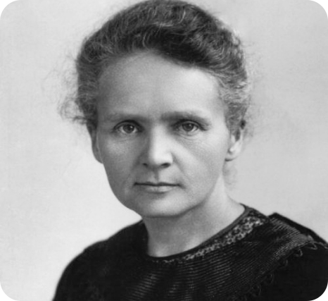

FÍSICA Y QUÍMICA
Marie Curie
Marie Curie fue una física y química polaco-francesa, pionera en el estudio de la radiactividad y una de las figuras más importantes de la ciencia.

SU HISTORIA
Una vida dedicada a la ciencia
Marie Curie revolucionó la ciencia con sus investigaciones sobre la radiactividad. Fue la primera mujer en recibir un Premio Nobel y la primera persona en obtenerlo en dos disciplinas científicas distintas: Física y Química.
Créditos: SuperCurioso en YouTube.
UN CAMINO LLENO DE DESAFÍOS
Persistir también es parte del descubrimiento
Curie desarrolló su trabajo en una época en la que las mujeres enfrentaban barreras para acceder a la educación superior y al reconocimiento científico. Su perseverancia y dedicación abrieron camino a futuras generaciones.
LEGADO CIENTÍFICO
Sus principales aportes
- Junto a Pierre Curie, descubrió los elementos polonio y radio.
- Contribuyó al desarrollo del estudio de la radiactividad.
- Desarrolló técnicas para aislar el radio y estudiar sus propiedades.
- Impulsó aplicaciones de la radiación en el campo médico.
¿Te inspira esta historia?
Explora más historias de mujeres que transformaron la ciencia y la tecnología.
Volver a historias